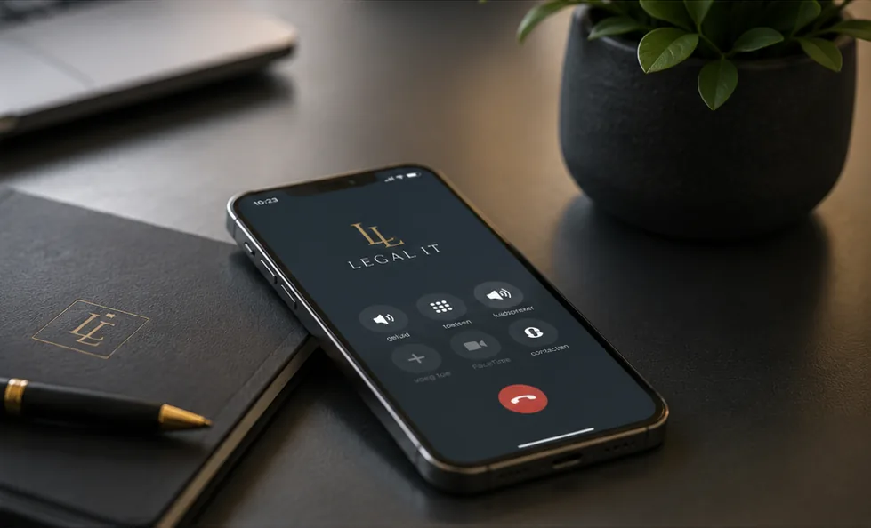

Onderdeel 01
Xelion-cloudtelefonie: uw centrale staat in de cloud
Cliënten en relaties verwachten dat ze u snel te pakken krijgen, ook als u niet op kantoor zit. Met Xelion belt u via internet (VoIP). Uw telefooncentrale draait in de cloud, groeit mee met uw kantoor en is kostenefficiënt. Als officieel Xelion-partner richten wij uw telefonie volledig in en beheren wij hem voor u.
Met de Xelion-app op pc en smartphone heeft u uw zakelijke nummer altijd bij u. Op kantoor, thuis of onderweg: cliënten bellen gewoon het nummer van kantoor.
Xelion is een Nederlandse softwareleverancier, met Nederlandse datacenters en een Nederlands ontwikkelteam.
- Bellen via internet, mee te groeien met uw kantoor
- Kostenefficiënt
- Bereikbaar op kantoor, thuis en onderweg
- Nederlandse leverancier, datacenters en ontwikkelaars
Onderdeel 02
Mobiele abonnementen van KPN, Odido of Vodafone
Wij leveren zakelijke mobiele abonnementen van de drie grote providers in Nederland. Zo kiest u de dekking en voorwaarden die bij uw kantoor passen.
Voor vast en mobiel heeft u één aanspreekpunt. Dat scheelt zoeken als er iets geregeld moet worden.
- KPN
- Odido
- Vodafone
- Eén partner voor vast en mobiel

Mobiele telefonieHoe bereikbaar is uw kantoor nu?
We kijken samen hoe u nu belt en gebeld wordt. Daarna maken we een voorstel dat bij uw kantoor past.